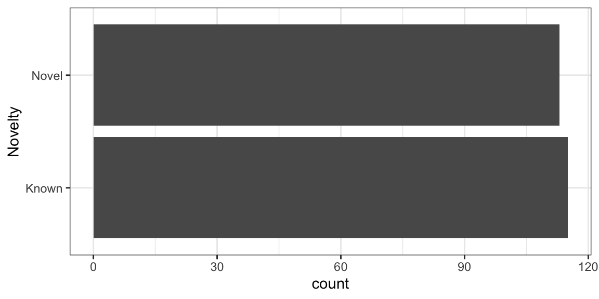
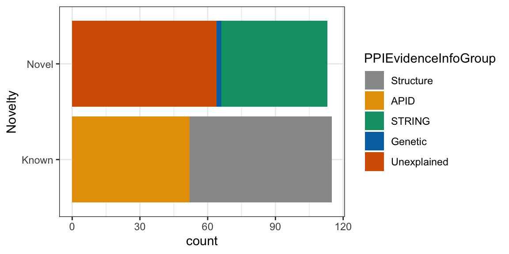

4 Proteomics Data Viz
4.1 Visualizing Proteomics data with ggplot2
Last session we worked on Cross-linking Mass Spectrometry Data. The data consisted of interaction between 300 yeast nuclear proteins.
We also learned about concepts behind Grammer of Graphics and plotting using ggplot2.
In this tutorial, we will be working on the data from Yeast Nuclear Protein interaction study using Cross-linking Mass Spectrometry.
We continue with the Cross-linking Proteomics dataset from Cytoscape tutorial.
The data was in excel, therefore we first converted it into Comma separated file (csv) format.
4.1.1 Optional: Reading excel file into R
If you want to load the excel files files directly to R then you can use another library readxl.
library(readxl)
nuclear_xl_ms_excel <- readxl::read_excel("r-intro-files/Nuclear_XL_MS.xlsx")
head(nuclear_xl_ms_excel)## # A tibble: 6 x 8
## Protein1 Protein2 NameProtein1 NameProtein2 PPINovelty PPIEvidenceInfo…
## <chr> <chr> <chr> <chr> <chr> <chr>
## 1 P02293 P04911 H2B1 H2A1 Known Structure
## 2 P02293 P02309 H2B1 H4 Known Structure
## 3 P02994 P32471 EF1A EF1B Known Structure
## 4 P0CX51 P38011 RS16A GBLP Known Structure
## 5 P02406 P0CX49 RL28 RL18A Novel STRING
## 6 P33297 P53549 PRS6A PRS10 Known Structure
## # … with 2 more variables: TotalNumberOfCSMs <dbl>,
## # NumberUniqueLysLysContacts <dbl>4.2 Exploring the data
## # A tibble: 6 x 8
## Protein1 Protein2 NameProtein1 NameProtein2 PPINovelty PPIEvidenceInfo…
## <chr> <chr> <chr> <chr> <chr> <chr>
## 1 P02293 P04911 H2B1 H2A1 Known Structure
## 2 P02293 P02309 H2B1 H4 Known Structure
## 3 P02994 P32471 EF1A EF1B Known Structure
## 4 P0CX51 P38011 RS16A GBLP Known Structure
## 5 P02406 P0CX49 RL28 RL18A Novel STRING
## 6 P33297 P53549 PRS6A PRS10 Known Structure
## # … with 2 more variables: TotalNumberOfCSMs <dbl>,
## # NumberUniqueLysLysContacts <dbl>Now lets examine the dataset with two base R functions str and summary
## Classes 'spec_tbl_df', 'tbl_df', 'tbl' and 'data.frame': 228 obs. of 8 variables:
## $ Protein1 : chr "P02293" "P02293" "P02994" "P0CX51" ...
## $ Protein2 : chr "P04911" "P02309" "P32471" "P38011" ...
## $ NameProtein1 : chr "H2B1" "H2B1" "EF1A" "RS16A" ...
## $ NameProtein2 : chr "H2A1" "H4" "EF1B" "GBLP" ...
## $ PPINovelty : chr "Known" "Known" "Known" "Known" ...
## $ PPIEvidenceInfoGroup : chr "Structure" "Structure" "Structure" "Structure" ...
## $ TotalNumberOfCSMs : num 36 21 20 13 13 12 12 12 11 10 ...
## $ NumberUniqueLysLysContacts: num 12 6 5 1 2 3 2 3 3 1 ...
## - attr(*, "spec")=
## .. cols(
## .. Protein1 = col_character(),
## .. Protein2 = col_character(),
## .. NameProtein1 = col_character(),
## .. NameProtein2 = col_character(),
## .. PPINovelty = col_character(),
## .. PPIEvidenceInfoGroup = col_character(),
## .. TotalNumberOfCSMs = col_double(),
## .. NumberUniqueLysLysContacts = col_double()
## .. )## Protein1 Protein2 NameProtein1 NameProtein2
## Length:228 Length:228 Length:228 Length:228
## Class :character Class :character Class :character Class :character
## Mode :character Mode :character Mode :character Mode :character
##
##
##
## PPINovelty PPIEvidenceInfoGroup TotalNumberOfCSMs
## Length:228 Length:228 Min. : 1.000
## Class :character Class :character 1st Qu.: 1.000
## Mode :character Mode :character Median : 1.000
## Mean : 2.706
## 3rd Qu.: 3.000
## Max. :36.000
## NumberUniqueLysLysContacts
## Min. : 1.000
## 1st Qu.: 1.000
## Median : 1.000
## Mean : 1.342
## 3rd Qu.: 1.000
## Max. :12.000While the data in PPINovelty and PPIEvidenceInfoGroup are characters/strings, they can also be thought of as categorical.
We will now look into the unique values for the PPINovelty and PPIEvidenceInfoGroup columns
## [1] "Known" "Novel"## [1] "Structure" "STRING" "APID" "Unexplained" "Genetic"R has a class for categorical data known as factors. We can convert these columns to factors and provide an order to those categories (levels). By default, R will order the levels of a factor alphabetically but we can override this behaviour by defining the level order. Here we will order the Evidence based on Strength of evidence for the interaction
nuclear_xl_ms <- nuclear_xl_ms %>% mutate(
PPINovelty = factor(PPINovelty),
PPIEvidenceInfoGroup = factor(PPIEvidenceInfoGroup, levels = c("Structure","APID", "STRING", "Genetic", "Unexplained"))
)
nuclear_xl_ms %>% str()## Classes 'spec_tbl_df', 'tbl_df', 'tbl' and 'data.frame': 228 obs. of 8 variables:
## $ Protein1 : chr "P02293" "P02293" "P02994" "P0CX51" ...
## $ Protein2 : chr "P04911" "P02309" "P32471" "P38011" ...
## $ NameProtein1 : chr "H2B1" "H2B1" "EF1A" "RS16A" ...
## $ NameProtein2 : chr "H2A1" "H4" "EF1B" "GBLP" ...
## $ PPINovelty : Factor w/ 2 levels "Known","Novel": 1 1 1 1 2 1 2 1 1 1 ...
## $ PPIEvidenceInfoGroup : Factor w/ 5 levels "Structure","APID",..: 1 1 1 1 3 1 3 1 1 2 ...
## $ TotalNumberOfCSMs : num 36 21 20 13 13 12 12 12 11 10 ...
## $ NumberUniqueLysLysContacts: num 12 6 5 1 2 3 2 3 3 1 ...4.3 Plotting interactions types
Firstly we will plot the number of Known and novel interactions using with geom_bar

Now, we will rotate the bars to Y-Axis using coord_flip()"
ggplot(nuclear_xl_ms, aes(x = PPINovelty)) +
geom_bar(position = "dodge") +
xlab("Novelty") +
coord_flip() +
theme_bw()
Next, step would be to create a stacked bar chart by adding PPIEvidenceInfoGroup data on top of each bar
ggplot(nuclear_xl_ms, aes(PPINovelty)) +
geom_bar(aes(fill=PPIEvidenceInfoGroup)) +
xlab("Novelty") +
coord_flip() +
theme_bw()
4.4 Individual Proteins
First we will calculate how many times a protein appeared in NameProtein1 column using table function and then sorting by descending order.
Next we will use head() function to print first five proteins with most observation.
##
## H2B1 EF1A RL27A H3 EF3A ODP2
## 10 7 5 4 3 3We could do same thing for NameProtein2 column as well.
##
## H3 RS15 NOP56 BFR1 PRS4 RL14A
## 6 5 4 3 3 3Now we store the rows containing H2B1 and EF1A proteins in NameProtein1 column in a datafame.
two_protein_df<- nuclear_xl_ms %>% filter(NameProtein1 %in% c("H2B1","EF1A"))
ggplot(two_protein_df, aes(x=PPINovelty, y=NumberUniqueLysLysContacts)) +
geom_col(aes(fill=PPIEvidenceInfoGroup)) +
labs(x= "Novelty",
y= "Number of Contacts") +
facet_wrap(~NameProtein1)+
theme_bw()
Volcano Plot
In this section, we will see how to plot a volcano plot for a quantitative proteomics dataset. This dataset is derived from label-free quantitative proteomics experiment investigating differences in protein profiles between Benign and Malignant Prostate cancers.
The details can be found on LFQ-Analyst under the Demo tab.
There are 20 samples in total with n=10 in each group.
A moderated t-test was performed to find differentially expressed proteins in the dataset. Each row represents a protein along with log fold change and p-values.
In this tutorial we will visualise the results in the form of Volcano Plot.
Firstly, we will load the data.
## [1] 2389## [1] 10The data has quantitative information about 2389 proteins and has 10 columns.
Now lets see the column names.
## [1] "Gene Name"
## [2] "Protein IDs"
## [3] "Benign_vs_Malignant_log2 fold change"
## [4] "Benign_vs_Malignant_p.val"
## [5] "Benign_vs_Malignant_p.adj"
## [6] "significant"
## [7] "Benign_vs_Malignant_significant"
## [8] "imputed"
## [9] "num_NAs"
## [10] "Protein.names"For plotting the volcano plot, we need to focus on th three columns
- Benign_vs_Malignant_log2 fold change
- Benign_vs_Malignant_p.adj
- significant
Next we will on the fly convert FDR values to -log10 and plot it against log2 fold change on the X-axis